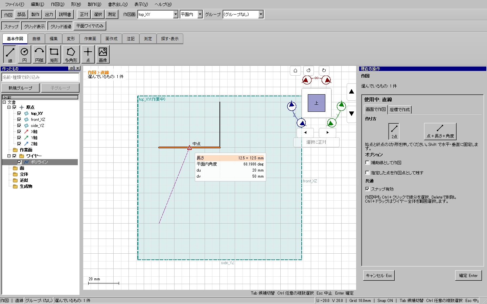
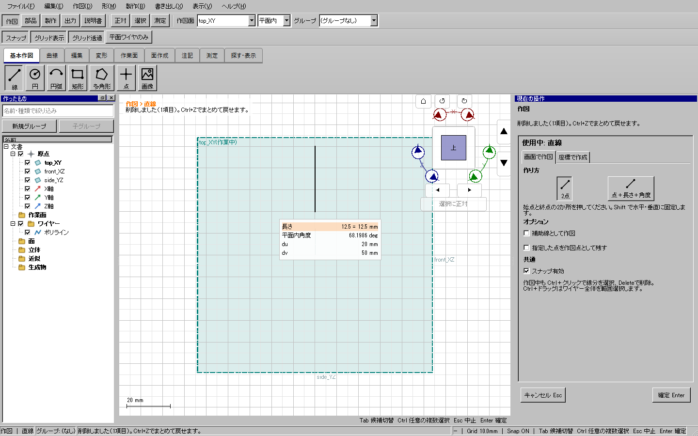
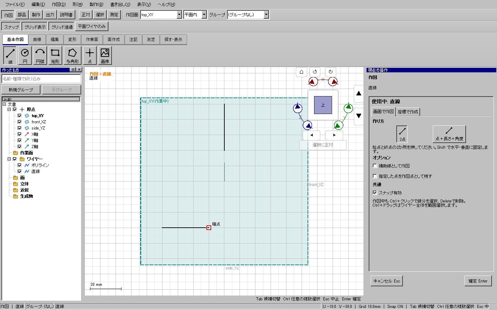
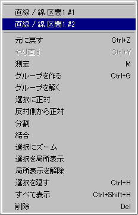
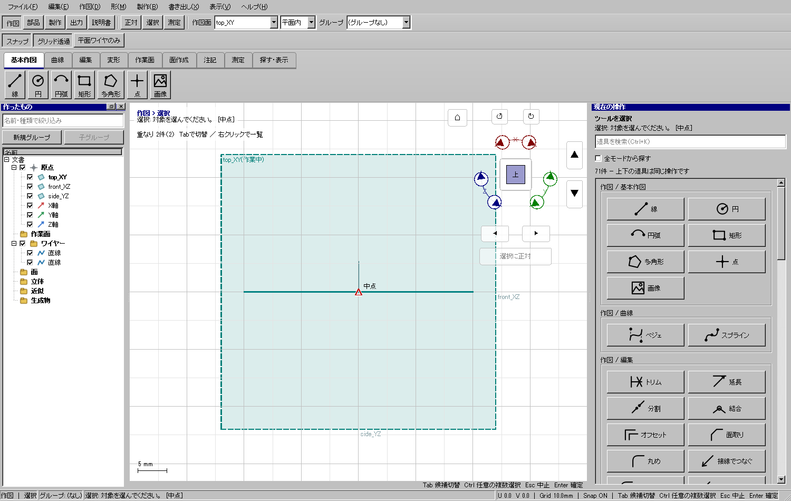
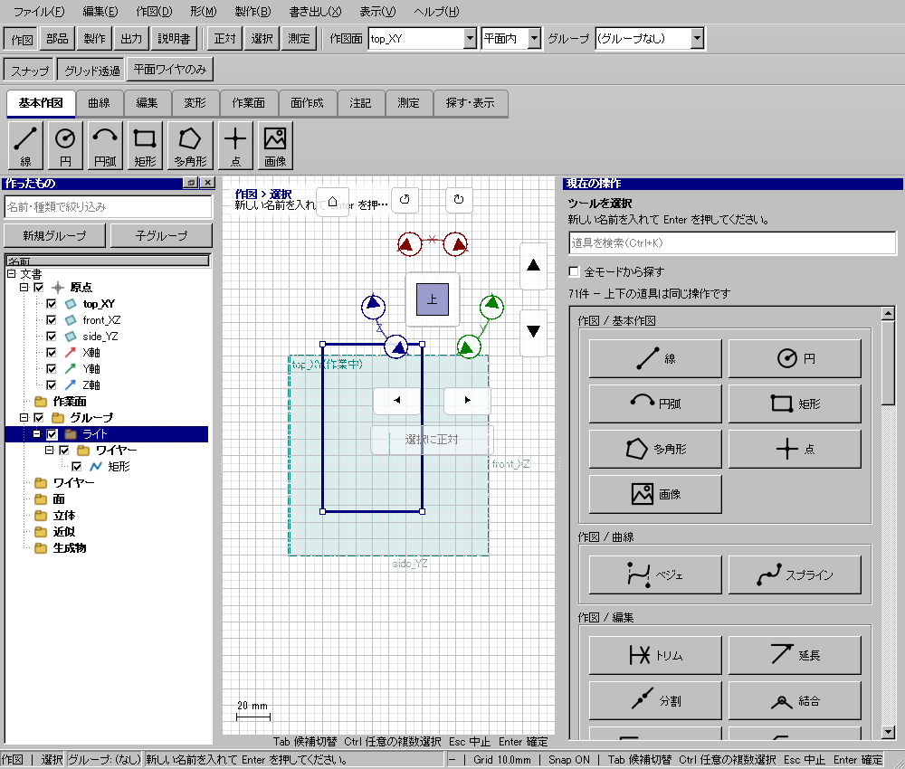
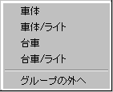
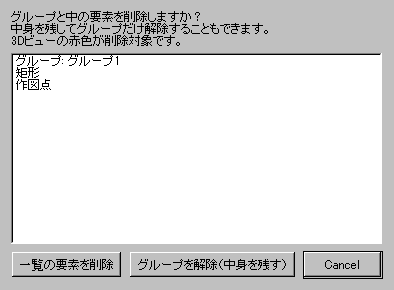
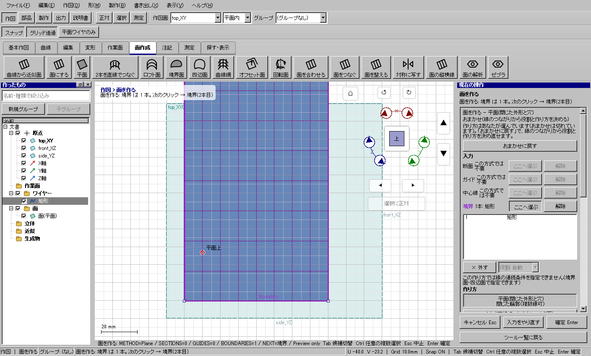
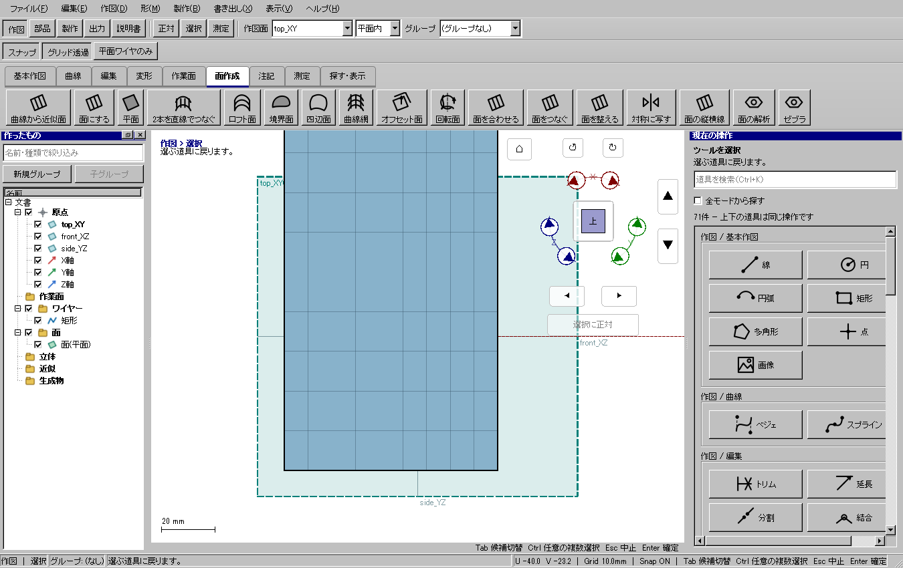

説明書へ戻る
重なる線を選び分け、左一覧の表示を整理する
作図を続けながら線を選んで削除する
直線・折れ線・円・円弧・矩形・点・ベジェ・スプライン・2点を結ぶ道具では、選択モードへ切り替える必要はありません。
- 線の道具で始点を置きます。必要なら長さなどの数値を入力します。
- 削除したい線の途中をCtrlを押しながらクリックします。選んだ線分が橙色になります。別の線分もCtrl＋クリックで追加でき、同じ線分をもう一度押すと解除できます。
- Deleteで選んだ線分を削除します。残す線分、入力途中の点、入力済みの数値、現在の道具はそのままです。参照する面なども消えるときは、名前の一覧と赤い3D表示を確認して削除または取消を選びます。
- 通常のクリックで次の点を置き、続けて作図します。重なる線は右クリックの「この場所の候補」から選ぶか、「この線分だけを削除」を使えます。

1：長さ12.5mmを入力したまま、既存の横線をCtrl＋クリック。右ペインは直線ツールのままです。

2：Delete後。隣の縦線と、入力途中の始点・長さ12.5mmは残ります。

3：次の点をクリックして直線を作成。選択モードへの往復は不要です。
選ぶ範囲：Ctrl＋クリックは線分単位。Ctrl＋ドラッグはワイヤー全体の範囲選択です。左から右は枠に全体が入ったもの、右から左は枠に触れたものを含みます。線分だけ消したい場合はクリックを使います。
数値編集と戻す順序：Ctrl選択後はDeleteが線の削除になります。数値を打ち直した後や実際の文字入力欄にカーソルがある場合は、Deleteは文字の編集になります。Ctrl＋Zは「点→削除」の順なら削除を先に、「削除→点」の順なら点を先に戻します。Escは入力を取り消して道具を維持します。押し出しや面取りなどの入力対象を選んでいる間は、その道具の役割選択に従います。
重なる線は右クリックから選ぶ
- 選択したい線が重なる場所へカーソルを置きます。3Dビューに「重なり ○件」の案内が出ます。
- 右クリックすると、上部の「この場所の候補」に名前・線の区間・グループが並びます。同名の候補には番号が付きます。
- 一覧の候補へマウスを合わせます。その候補だけが3Dビューで強調表示されます。この時点では選択を確定しません。
- 狙った線をクリックして確定します。間違っていたら別の候補を選び直せます。メニューを取り消しても文書は変わりません。

重なる直線2本を用意したQt操作試験の実メニュー。候補の名前を確認できます。
同じ試験で候補にマウスを合わせた3D画面。メニューとビューは別々のウィンドウを撮影しています。
Tabで次、Shift＋Tabで前の候補へ移る操作も使えます。候補を確認して通常クリックで選択します。Alt＋クリックは次の候補を選びます。
押し出しの終端面や方向の線などを選ぶときは、先に右ペインの該当欄の「選ぶ」を押します。その選択中にも候補一覧を使えます。通常の選択と、ツールが要求している入力を混同しません。
カテゴリをまとめて表示・非表示にする
- 左一覧で「ワイヤー」「面」「作業面」などのカテゴリのチェックを切り替えます。
- そのカテゴリの中の項目をまとめて切り替えます。グループ内のカテゴリなら、そのグループ内だけが対象です。
- 表示と非表示が混在しているときは中間の印になります。まとめた変更は1回のUndoで戻せます。
チェック操作で行の選択先を変更せず、スクロールや折り畳みを維持します。カテゴリ内の個別チェックは、その項目だけを切り替えます。
グループを隠しても、中身の設定を保つ
例えば「ライト」グループ内で補助線だけを非表示にしておきます。グループ行のチェックで全体を隠し、再び表示しても、補助線は非表示のままです。非表示だった子グループも、その状態を保ちます。個々の表示設定をまとめて変更したい場合は、グループ行ではなく「ワイヤー」等のカテゴリを操作してください。
フォルダのように開閉・名前変更する
グループ名を1回クリックすると開閉します。左の矢印でも開閉でき、チェックは表示・非表示だけを切り替えます。左右キーで階層を移動し、F2で名前を入力、Enterで確定、Escで名前変更を取り消せます。中身のない分類は並べません。ドラッグで別のグループへ移せ、移動はUndoで戻せます。Deleteでは確認が出て、中身ごと削除／グループを解除して中身を残す／取消を選べます。
同じ階層と子グループを作り分ける
- 左一覧で既存のグループ行を選びます。
- 一覧上部の「新規グループ」は、選んだグループと同じ階層へ作ります。「子グループ」は、その中へ作ります。
- 作成した行でF2を押して名前を変更します。右クリックにも同じ階層／子グループの入口があります。
例：「前面」の中の「ライト」を選んで「新規グループ」→「ライト」と同列の「扉」を作れます。グループを選んでいないときの「子グループ」は無効です。「新規グループ」は空のグループを作り、選択していた項目は動かしません。既存の項目をまとめるときは、複数選択して右クリックの「グループを作る」を使います。
面が細かく分割されて見えるとき
面の内側にある細線は、形状確認用のU/V線の場合があります。これは面の分割や編集用ワイヤーではありません。「グリッド」を開き「面の形状確認線」を、表示しない／選択した面だけ／すべての面から選びます。通常は「選択した面だけ」です。切り替えても面の精度・穴・厚みは変わりません。
近似から固定する同一平面の区間も、不要な面境界を整理します。折れ目・穴・離れた領域は保持します。保存済みの元ワイヤーを勝手に書き換える操作ではありません。
面の上にある元ワイヤーを選んで面を張る
- 「面にする」または「面を作る」を先に選びます。
- 境界・断面などの線の入力欄を選び、3D上の元ワイヤーをクリックします。表示中の面の縁と重なっていても、元ワイヤーを選べます。面を非表示にする操作は不要です。
- もう一度クリックすると入力から外れます。高度な面作成で支持面・元の面を指定するときは、その欄を選んでから面をクリックします。
実画面で確認する

グループを1回クリックで開閉。チェックは出し隠し、F2は名前変更です。
- 移したいグループや項目を選び、右クリックの「グループへ移動」を開きます。
- 移動先は「車体/ライト」「台車/ライト」のような所属付きです。目的の行をクリックします。
- 親と子を一緒に移しても、子とその中身は親の中に残ります。1回のUndoで移動を戻せます。

同じ「ライト」でも、どのグループ内か区別できます。取り消した場合は移動しません。

Deleteでは対象名を確認します。「グループを解除」は中身を残し、「一覧の要素を削除」はグループと中身を削除します。

面作成の線の入力欄では、面を隠さず元ワイヤーを選択できます。支持面を指定する場合は、その入力欄へ切り替えます。
形状確認線を非表示にした面。穴・精度・元の形状は維持します。

同じ面の形状確認線を表示。細線は編集用ワイヤーや部品の分割ではありません。